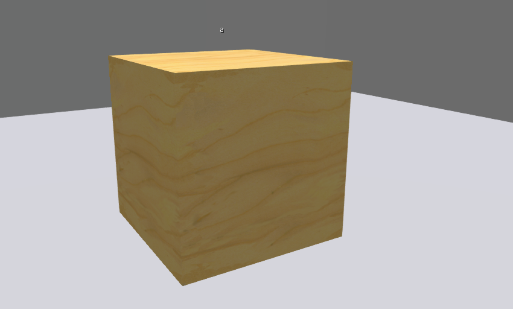
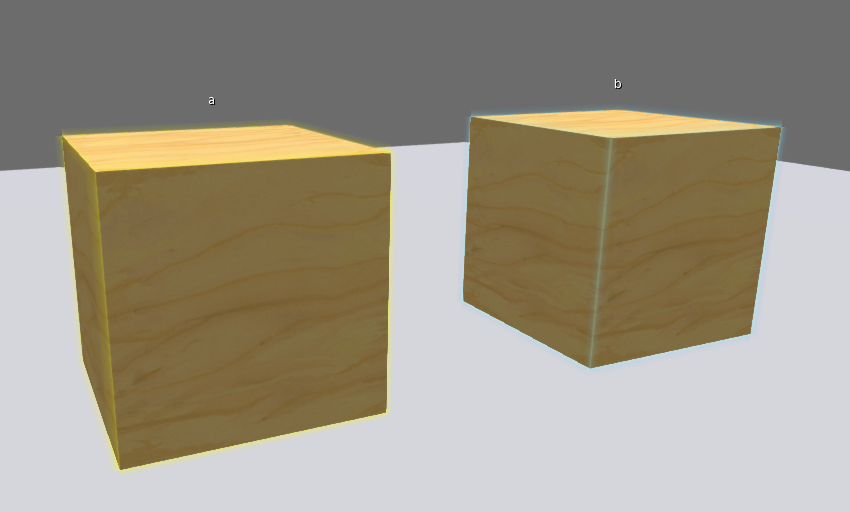

LOG_LEVEL 0
MENU_TEXT_PARTS PART
MENU_TEXT_SETS SET
TOUCH 1
当本脚本在子prim中, 有点击弹出菜单行为时会用到
PASS_TOUCHS 0
OWNER_ONLY 1
不为"0"时生效
CHANNEL_LOCAL_MENU 0
上一级菜单需要通过本地消息监听本频道，不为"0"时生效
CHANNEL_LOCAL_MENU_BACK 0
用于接收 CHANNEL_LOCAL_BOARDCAST 的广播数据，不为"0"时生效
CHANNEL_LOCAL_SYNC 0
会被同值的CHANNEL_LOCAL_SYNC接收，不为"0"时生效
CHANNEL_LOCAL_BOARDCAST 0
用于批量生效多个部件的某一种贴图方案。
MENU_OPTION_SETS [set name]
SETS RED|GREEN
同一个linkset中可以有多个同名物体，他们都会被匹配并替换
PART OBJ_1|object name 1|ALL_SIDES
PART部件的子选项
SET RED|TEXTURE_BLANK|NULL_KEY|NULL_KEY
SET GREEN|TEXTURE_BLANK||
与 PART 都表示一个部件，不同的是PART*并不会显示在部件菜单中。套装对此部件有效。
PART* OBJ_2|object name 2|ALL_SIDES
SET RED|TEXTURE_BLANK|NULL_KEY|NULL_KEY
SET GREEN|TEXTURE_BLANK|NULL_KEY|NULL_KEY
BUTTON MORE|100|arguments
PART A|a|ALL_SIDES
SET Default|TEXTURE_PLYWOOD||
SET RED|9c198f45-3f70-1a50-f38c-8ce19044b396||
SET GREEN|2f8ae0e4-22be-20c8-c0cc-c50bbfaf2871||
|  | |
| 1. 单物件名为"a", 点击 | 2. 选择"A" |
|
|
| 3. 选择"RED" | 4. A所有面都应用了RED贴图 |
脚本在主Prim，控制多个物件、多个面
PART A|a|ALL_SIDES
SET Default|TEXTURE_PLYWOOD||
SET RED|9c198f45-3f70-1a50-f38c-8ce19044b396||
SET GREEN|2f8ae0e4-22be-20c8-c0cc-c50bbfaf2871||
PART B|b|3
SET Default|TEXTURE_PLYWOOD||
SET RED|9c198f45-3f70-1a50-f38c-8ce19044b396||
SET GREEN|2f8ae0e4-22be-20c8-c0cc-c50bbfaf2871||
PART B|b|3 控制名为"b"的物件中第3个面
|  | |
| 1. Linkset包含"a"和"b", 脚本在主prim，点击 | 2. 选择"B" |
| 3. 选择"RED" | 4. B的第3个面应用了RED贴图 |